代理
定義:
這是一個屬於總代理的代理名單, 總代理可以根據個別代理深入到會員名單。從這個名單, 總代理可以更新代理/會員及也可查看每日賬目。
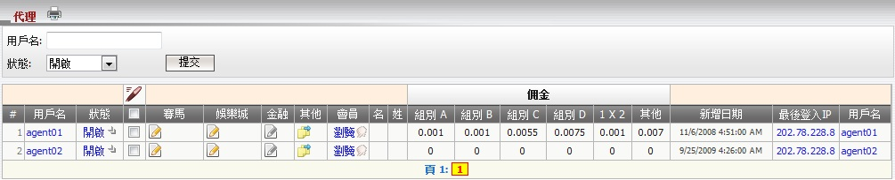
圖 1.1
用詞註解:
- 狀態: 代理狀態 (開啟, 關閉, 暫停 或 禁用)。
- 組別 A,B,C,D: 基於組別的代理佣金數額設定, 而這些設定將根據投注類別亞洲盤, 單雙, 大小盤應用於注單。 注意每个会员将属于一个明确的组别 (A, B, C, D)。
- 1x2 佣金: 基於會員注單根據投注類別1x2的代理佣金數額設定。
- 其他佣金: 基於會員注單根據其他投注類別的代理佣金數額設定。
如何修改會員資料?
- 我們可以修改單一代理或多重代理的以下資料: 狀態, 佣金, 投注設定及佔成數。
- 在體育博彩投注設定及佔成, 我們可以設置個別運動類別的值或只是設置足球/籃球的值再應用到其他運動類別。
編輯體育博彩
修改單一會員資料
- 點擊狀態欄的 "開啟" 鍵以修改代理信息, 之後將開啟編輯頁面, 請參考 新增代理指引以便了解這頁面的細節。
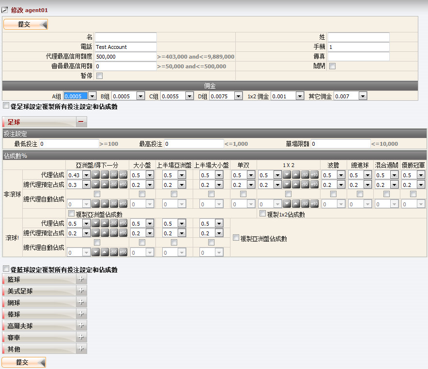
編輯單一代理
修改多重代理資料
- 從代理名單, 點選您要編輯的個別代理, 點擊 "修改圖標" 然後選擇 "修改多重體育博彩佔成", 請參考新增代理指引以了解這頁面的細節。請記得所有代理都講具有相同的設置。若要編輯所有代理, 使用 "選擇所有" 功能。
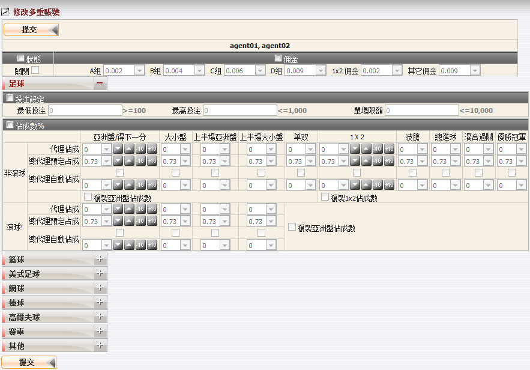
編輯多重代理
編輯賽馬
修改單一代理賽馬設定
- 在賽馬欄目點擊 "修改圖標" 以修改代理資料, 然後代理修改頁面將被開啟。
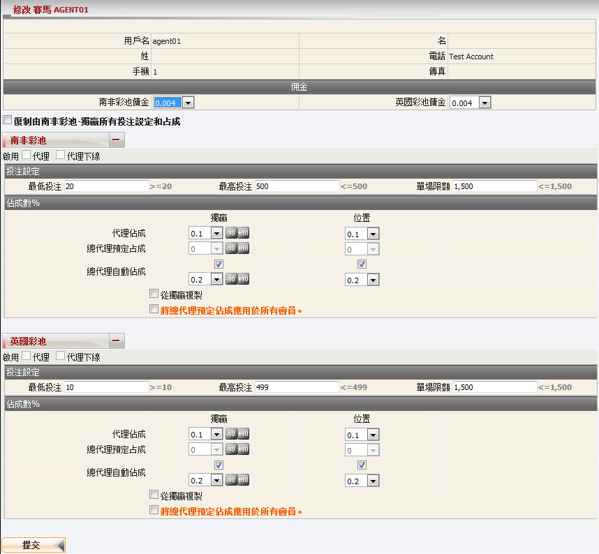
修改單一會員
修改多重代理賽馬設定
- 從代理名單, 點選您要編輯的個別代理, 點擊 "修改圖標" 然後選擇 "修改多重賽馬佔成", 請參考新增代理指引以了解這頁面的細節。請記得所有代理都講具有相同的設置。若要編輯所有代理, 使用 "選擇所有" 功能。
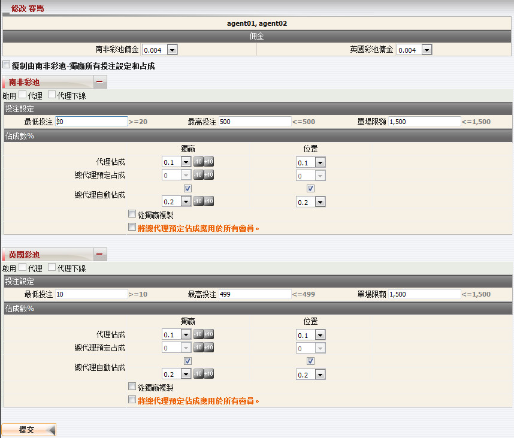
修改多重代理
編輯娛樂城
修改單一代理娛樂城設定
- 在娛樂城欄目點擊 "修改圖標" 以修改代理資料, 然後代理修改頁面將被開啟。
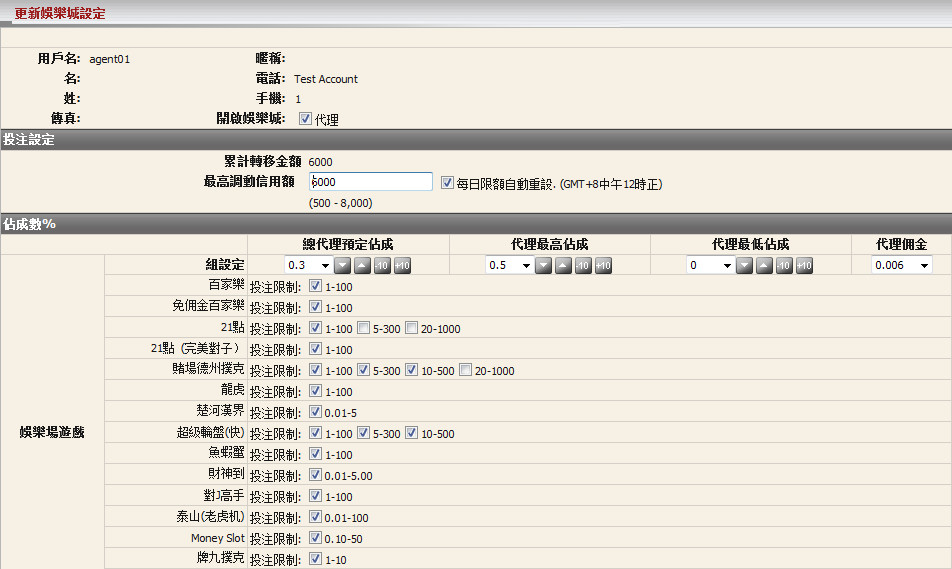
修改單一代理
修改多重代理金融設定
- 從代理名單, 點選您要編輯的個別代理, 點擊 "修改圖標" 然後選擇 "修改多重娛樂城佔成", 請參考新增代理指引以了解這頁面的細節。請記得所有代理都講具有相同的設置。若要編輯所有代理, 使用 "選擇所有" 功能。
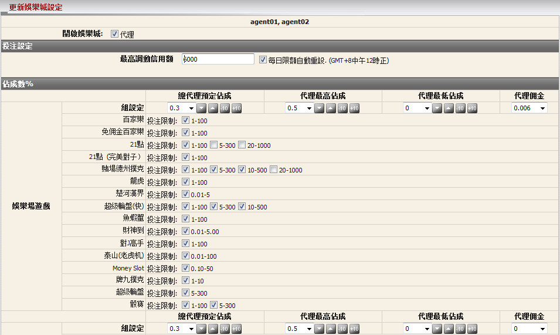
修改多重代理
編輯金融
修改單一代理金融設定
- 在金融欄目點擊 "修改圖標" 以修改代理資料, 然後代理修改頁面將被開啟。
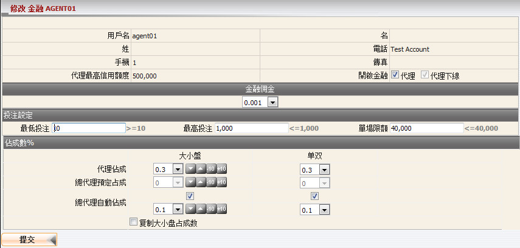
修改單一代理
修改多重代理金融設定
- 從代理名單, 點選您要編輯的個別代理, 點擊 "修改圖標" 然後選擇 "修改多重金融佔成", 請參考新增代理指引以了解這頁面的細節。請記得所有代理都講具有相同的設置。若要編輯所有代理, 使用 "選擇所有" 功能。
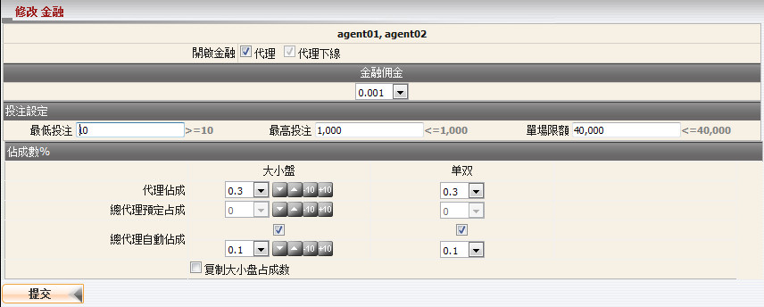
修改多重代理
如何編輯代理最低佔成數?
最低佔成數是代理必須取的最低值, 此值將立即影響當前代理佔成數。
編輯體育博彩最低佔成數
-
在其他欄目點擊 "修改圖標", 然後選擇 "體育博彩最低佔成數" 以修改代理最低佔成。對於體育博彩最低佔成, 我們可以對各項體育類別定值, 或使用足球/籃球的設定然後應用於其他體育類別。
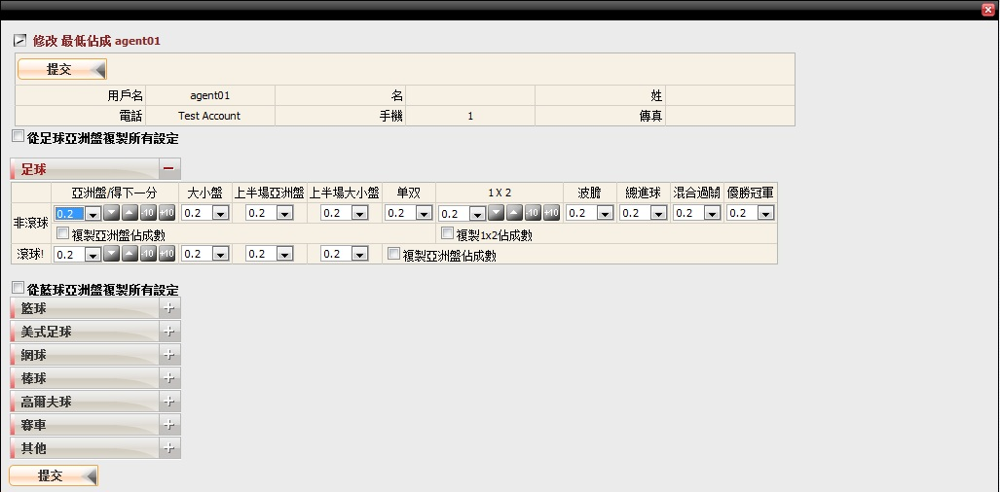
修改代理最低佔成數
編輯金融最低佔成數
-
在其他欄目點擊 "修改圖標", 然後選擇 "金融最低佔成數" 以修改代理最低佔成。
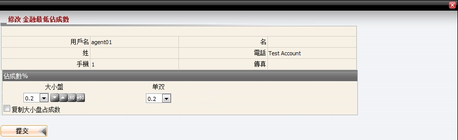
修改最低佔成數
編輯賽馬最低佔成數
-
在其他欄目點擊 "修改圖標", 然後選擇 "賽馬最低佔成數" 以修改代理最低佔成。修改最低佔成頁面將被開啟:
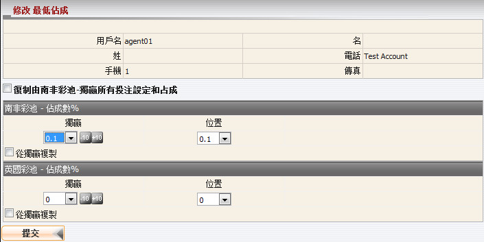
修改代理最低佔成數
如何編輯轉賬設定?
在其他欄目點擊 "修改圖標", 然後選擇 "轉賬" 以修改代理轉賬設定。修改轉賬設定頁面將被開啟:
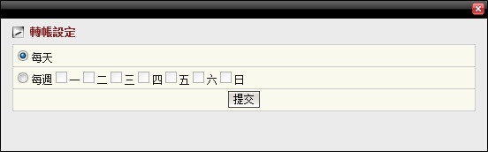
修改代理轉帳設定
注:
- 這只會出現在當總代理被允許每日轉賬。
- 若要修改代理轉賬設定, 總代理必須被允許能夠每日轉賬。
如何更改代理密碼?
在其他欄目點擊代理的 "修改圖標", 然後選擇 "密碼"。更改密碼頁面將被開啟:
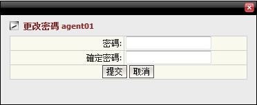
更改代理密碼
如何查看會員每日帳目?
點擊代理用戶名, 然後代理每日帳目頁面將被開啟。
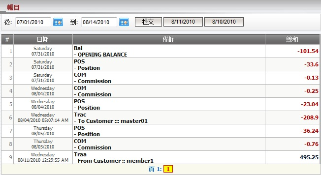
代理每日帳目
- 用詞註解:
- Bal-OPENING BALANCE: 所有輸贏的總額及轉賬交易至期初餘額日的前一天。
- POS-Position: 基於佔成數代理的收入數額。
- COM-Commission: 扣除會員佣金後, 代理剩餘的佣金。
- Trac-To Customer: 代理與上線的轉賬數額 (由上線執行)。
- Traa-From Customer: 代理與會員的轉賬數額 (由代理執行)。
如何查看會員名單?
在會員欄目點擊代理的 "遊覽" 以查看代理的會員名單。會員名單頁面將被開啟:
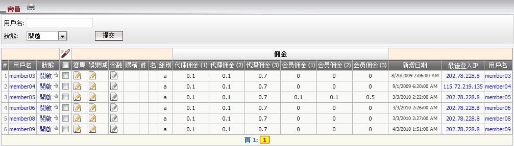
會員名單
用詞注解:
- 狀態: 會員狀態(開啟, 關閉 或 暫停)。
- 組別: 會員屬於的組別, 不同的組別不同的佣金率。
- 代理佣金(1): 代理佣金設定適用於投注類別: 亞洲盤,大小盤和單雙的注單。
- 代理佣金(2): 代理佣金設定適用於投注類別: 1x2的注單。
- 代理佣金(3): 代理佣金設定使用於其他投注類別的注單。
- 會員佣金(1): 會員佣金設定適用於投注類別: 亞洲盤,大小盤和單雙的注單。
- 會員佣金(2): 會員佣金設定適用於投注類別: 1x2的注單。
- 會員佣金(3): 會員佣金設定使用於其他投注類別的注單。
如何編輯會員資料?
- 總代理可以根據以下細節修改單一會員資料或多重會員資料: 狀態及總代理對於會員的佔成數。
- 我們可以設置個別運動類別的佔成數或使用足球/籃球的設置再應用到其他運動類別。
編輯體育博彩
修改單一會員資料
- 在狀態欄目點擊 "狀態" 以修改會員設定, 之後會員體育博彩修改頁面將被開啟:
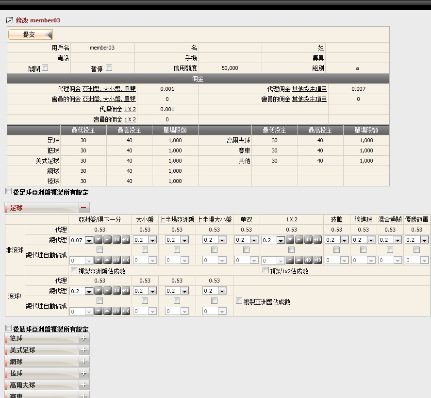
修改單一會員
修改多重會員資料
- 從會員名單, 點選您要編輯的個別會員, 點擊 "修改" 圖標 然後選擇 "修改多重體育博彩佔成", 之後多重會員修改頁面將被開啟。 請記得所有會員都講具有相同的設置。若要編輯所有會員, 使用 "選擇所有" 功能。
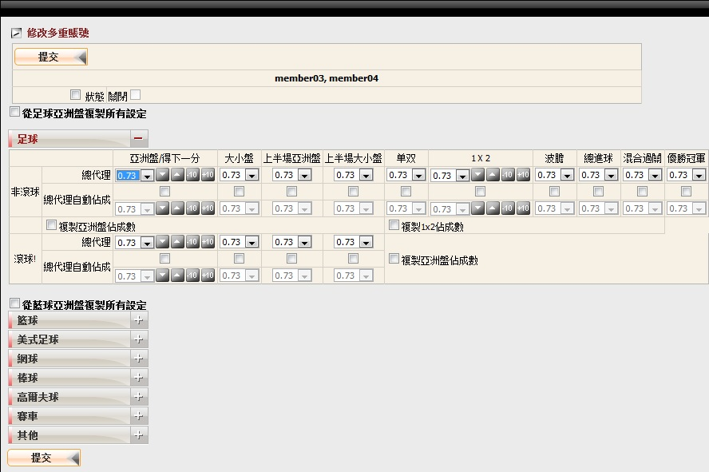
修改多重會員
編輯賽馬
修改單一會員賽馬設定
- 在賽馬欄目點擊 "修改圖標" 以修改會員設定, 之後會員賽馬修改頁面將被開啟:
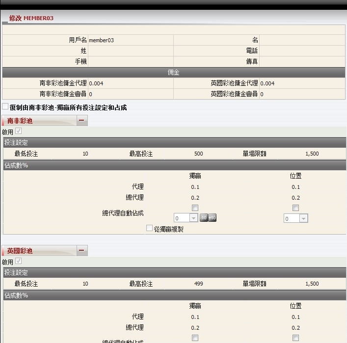
修改單一會員
修改多重會員賽馬設定
- 選擇所有, 點擊 "修改圖標", 然後選擇 "修改多重賽馬占成數" 以進行更新。請記得所有會員都講具有相同的設置。
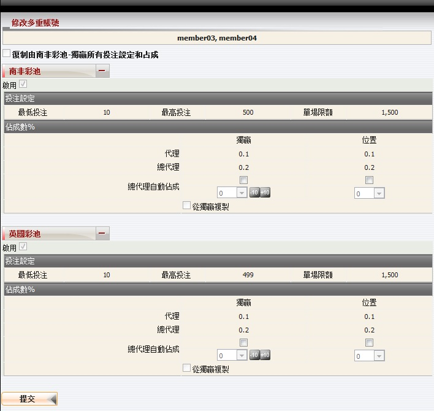
修改多重會員
編輯娛樂城
修改單一會員娛樂城設定
- 在娛樂城欄目點擊 "修改圖標" 以修改會員設定, 之後會員娛樂城修改頁面將被開啟。
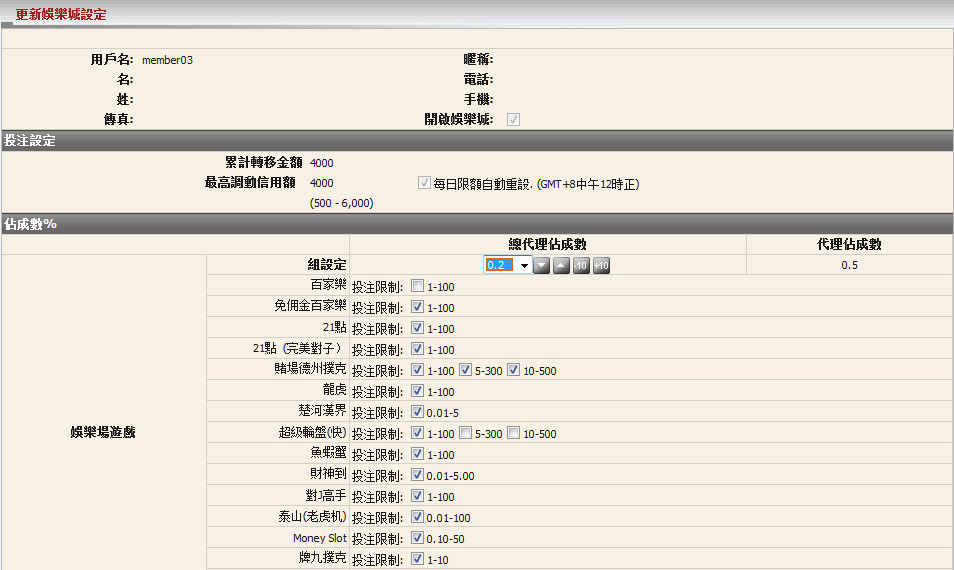
修改單一會員
修改多重會員娛樂城設定
- 選擇所有, 點擊 "修改圖標", 然後選擇 "修改多重娛樂城占成數" 以進行更新。請記得所有會員都講具有相同的設置。
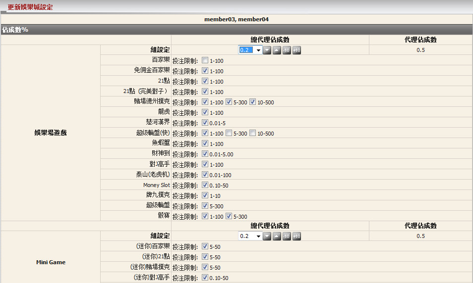
編輯多重會員
編輯金融
修改單一會員金融設定
- 在金融欄目點擊 "修改圖標" 以修改會員設定, 之後會員金融修改頁面將被開啟。
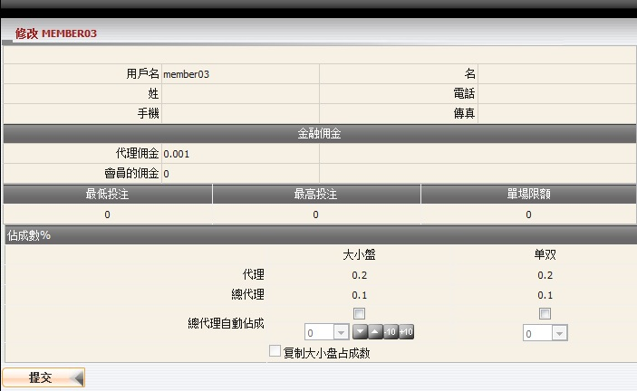
修改單一會員
修改多重會員金融設定
- 選擇所有, 點擊 "修改圖標", 然後選擇 "修改多重金融占成數" 以進行更新。請記得所有會員都講具有相同的設置。
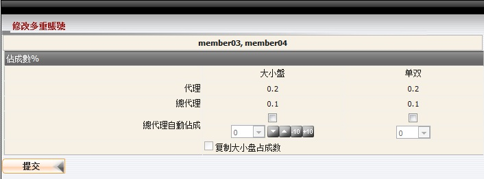
修改多重會員
如何查看會員每日帳目?
點擊會員用戶名, 之後會員每日賬目頁面將被開啟。
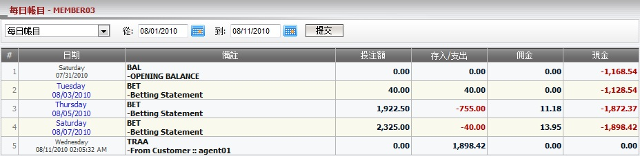
會員每日帳目
- 用詞註解:
- BAL-OPENING BALANCE: 所有輸贏的總額及轉賬交易至期初餘額日的前一天。
- BET-Betting Statement: 輸贏數額於已結算注單。
- BET-Outstanding Bet: 進行中/等待中的注單的總投注額。
- TRAA-To Customer, TRAA-From Customer: 代理與會員的轉賬(由代理執行)。